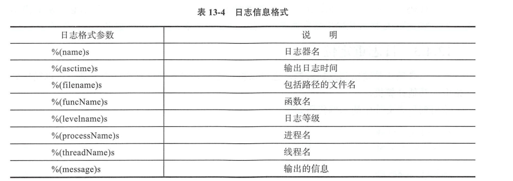

12.11. logging模块¶
python的logging模块提供了标准的日志接口，你可以通过它存储各种格式的日志.
日志级别大小关系为:
critical > error > warning > info > debug > notset也可自定义日志级别
默认级别是WARNING，
表示只有WARING和比WARNING更严重的事件才会被记录到日志内，低级别的信息会被忽略。
因此，默认情况下，DEBUG和INFO会被忽略，WARING、ERROR和CRITICAL会被记录。
import logging
logging.debug('debug') # 默认日志级别为 warning ,故debug日志不做打印
logging.warning('warning') # 达到默认日志级别为WARNING,打印到屏幕 warning
eg1
#!/usr/bin/env python
#-*- coding:utf8 -*-
# auther; 18793
# Date：2019/5/21 16:16
# filename: logging日志模块.py
import logging
logging.basicConfig(level=logging.ERROR) #设置日志级别为ERROR
logging.debug("这是DEBUG级别信息")
logging.info("这是INFO级别信息")
logging.warning("这是WARNING级别信息")
logging.error("这是ERROR级别信息")
logging.critical("这是CRITICAL级别信息")
输出结果
ERROR:root:这是ERROR级别信息
CRITICAL:root:这是CRITICAL级别信息
eg2
getLogger()函数创建自己的日志器对象，本例中__name__是当前模块名。使用自定义日志器的示例代码如下：
#!/usr/bin/env python
#-*- coding:utf8 -*-
# auther; 18793
# Date：2019/5/21 16:16
# filename: logging日志模块.py
import logging
logging.basicConfig(level=logging.DEBUG) #设置日志级别为DEBUG
logger = logging.getLogger(__name__)
logger.debug("这是DEBUG级别信息")
logger.info("这是INFO级别信息")
logger.warning("这是WARNING级别信息")
logger.error("这是ERROR级别信息")
logger.critical("这是CRITICAL级别信息")
输出结果
DEBUG:__main__:这是DEBUG级别信息
INFO:__main__:这是INFO级别信息
WARNING:__main__:这是WARNING级别信息
ERROR:__main__:这是ERROR级别信息
CRITICAL:__main__:这是CRITICAL级别信息
12.11.1. 日志信息格式化¶
eg2
#!/usr/bin/env python
# -*- coding:utf8 -*-
# auther; 18793
# Date：2019/5/21 16:16
# filename: logging日志模块.py
import logging
logging.basicConfig(level=logging.INFO, format='%(asctime)s - %(threadName)s - %(name)s - %(funcName)s - %(levelname)s'
'-%(message)s')
logger = logging.getLogger(__name__)
logger.debug("这是DEBUG级别信息.")
logger.info("这是INFO级别信息.")
logger.warning("这是WARNING级别信息.")
logger.error("这是ERROR级别信息。")
logger.critical("这是CRITICAL级别信息。")
def funlog():
logger.info("进入funlog函数。")
logger.info("调用funlog函数。")
funlog()
输出结果
2019-05-21 16:31:33,371 - MainThread - __main__ - <module> - INFO-这是INFO级别信息.
2019-05-21 16:31:33,371 - MainThread - __main__ - <module> - WARNING-这是WARNING级别信息.
2019-05-21 16:31:33,371 - MainThread - __main__ - <module> - ERROR-这是ERROR级别信息。
2019-05-21 16:31:33,371 - MainThread - __main__ - <module> - CRITICAL-这是CRITICAL级别信息。
2019-05-21 16:31:33,371 - MainThread - __main__ - <module> - INFO-调用funlog函数。
2019-05-21 16:31:33,371 - MainThread - __main__ - funlog - INFO-进入funlog函数。
12.11.2. 日志重定位¶
将日志信息输出到test.log文件中
eg
# 日志重定位
import logging
logging.basicConfig(level=logging.INFO, format='%(asctime)s - %(threadName)s - %(name)s - %(funcName)s - %(levelname)s'
'-%(message)s', filename="test.log")
logger = logging.getLogger(__name__)
logger.debug("这是DEBUG级别信息.")
logger.info("这是INFO级别信息.")
logger.warning("这是WARNING级别信息.")
logger.error("这是ERROR级别信息。")
logger.critical("这是CRITICAL级别信息。")
def funlog():
logger.info("进入funlog函数。")
logger.info("调用funlog函数。")
funlog()
#!/usr/bin/env python
# -*- coding:utf8 -*-
# auther; 18793
# Date：2020/1/7 14:13
# filename: Logging01.py
__author__ = 'hstking hstking@hotmail.com'
import logging
class TestLogging(object):
def __init__(self):
logFormat = '%(asctime)-12s %(levelname)-8s %(name)-10s %(message)-12s'
logFileName = './testLog.txt'
logging.basicConfig(level=logging.INFO,
format=logFormat,
filename=logFileName,
filemode='w')
logging.debug('debug message')
logging.info('info message')
logging.warning('warning message')
logging.error('error message')
logging.critical('critical message')
if __name__ == '__main__':
tl = TestLogging()
eg
import logging
LOG_FILENAME = 'hello.py'
logging.basicConfig(filename=LOG_FILENAME, level=logging.DEBUG,)
logging.debug('This message should go to the log file')
with open(LOG_FILENAME, 'rt') as f:
prg = f.read()
print('FILE:')
print(prg)
定义一个logging类¶
#!/usr/bin/env python
# -*- coding:utf8 -*-
# auther; 18793
# Date：2019/9/17 10:40
# filename: loggingClass.py
import logging
import getpass
import sys
# 定义MyLog类
class MyLog(object):
'''
这个类用于创建一个自用的log
'''
def __init__(self): # 类MyLog的构造函数
user = getpass.getuser()
self.logger = logging.getLogger(user)
self.logger.setLevel(logging.DEBUG)
logFile = './' + str(sys.argv[0]).split("/")[-1][0:-3] + '.log' # 日志文件名
print(logFile)
formatter = logging.Formatter('%(asctime)-12s %(levelname)-8s %(name)-10s %(message)-12s')
''' 日志显示到屏幕上并输出到日志文件内'''
logHand = logging.FileHandler(logFile)
logHand.setFormatter(formatter)
logHand.setLevel(logging.ERROR) # 只有错误才会被记录到logfile中
logHandSt = logging.StreamHandler()
logHandSt.setFormatter(formatter)
self.logger.addHandler(logHand)
self.logger.addHandler(logHandSt)
''' 日志5个基本对应以下5个函数 '''
def debug(self, msg):
self.logger.debug(msg)
def info(self, msg):
self.logger.info(msg)
def warn(self, msg):
self.logger.warn(msg)
def error(self, msg):
self.logger.error(msg)
def critical(self, msg):
self.logger.critical(msg)
if __name__ == '__main__':
mylog = MyLog()
mylog.debug("I'm debug")
mylog.warn("I'm warn")
mylog.error("I'm error")
mylog.critical("I'm critical")
· 将loggingClass.py作为模块导入使用
#!/usr/bin/env python
# -*- coding:utf8 -*-
# auther; 18793
# Date：2019/9/17 12:27
# filename: testmylog.py
from loggingClass import MyLog
if __name__ == '__main__':
t1 = MyLog()
t1.info("This is info")
t1.debug("This is debug")
t1.warn("This is warnning")
t1.error("This is error")
t1.critical("This is critcal")
使用配置文件¶
eg
#!/usr/bin/env python
# -*- coding:utf8 -*-
# auther; 18793
# Date：2019/5/21 16:37
# filename: logging读取配置文件.py
import logging
import logging.config
logging.config.fileConfig("logger.conf") #配置信息从文件logger.conf中读取
logger = logging.getLogger("logger1") #从配置文件中读取logger1配置信息创建日志器
logger.debug("这是DEBUG级别信息")
logger.info("这是INFO级别信息")
logger.warning("这是WARNING级别信息")
logger.error("这是ERROR级别信息")
logger.critical("这是CRITICAL级别信息")
def funlog():
logger.info("进入funlog函数")
logger.info("调用funlog函数。")
funlog()
logger.conf
使用时注意要去掉 #注释的信息
[loggers] #配置日志器
keys=root,simpleExample #日志器包含了root和simpleExample
[logger_root] #配置根日志器
level=DEBUG
handlers=consoleHandler #日志器对应的处理器
[logger_simpleExample] #配置simpleExample日志器
level=DEBUG
handlers=fileHandler #日志器对应的处理器
qualname=logger1 #日志器名称
propagate=0
[handlers] #配置处理器
keys=consoleHandler,fileHandler #包含了两个处理器
[handler_consoleHandler] # 配置consoleHandler日志器
class=StreamHandler
level=DEBUG
formatter=simpleFormatter
args=(sys.stdout,)
[handler_fileHandler] #配置fileHandler日志器
class=FileHandler
level=DEBUG
formatter=simpleFormatter
args=('test.log','a')
[formatters] #配置格式化器
keys=simpleFormatter #日志器包含simpleFormatter
[formatter_simpleFormatter] #配置simpleFormatter格式化器
format=%(asctime)s %(filename)s[line:%(lineno)d] %(funcName)s %(levelname)s %(message)s
执行之后，日志会记录到test.log中。
logging.basicConfig # 通过logging.basicConfig函数对日志的输出格式及方式做相关配置
# basicConfig 相关参数帮助
filename # 指定日志文件名
filemode # 和file函数意义相同，指定日志文件的打开模式，'w'或'a'
datefmt # 指定时间格式，同time.strftime()
level # 设置日志级别，默认为logging.WARNING
stream # 指定将日志的输出流，可以指定输出到sys.stderr,sys.stdout或者文件，默认输出到sys.stderr，当stream和filename同时指定时，stream被忽略
format # 指定输出的格式和内容，format可以输出很多有用信息，如上例所示:
%(levelno)s # 打印日志级别的数值
%(levelname)s # 打印日志级别名称
%(pathname)s # 打印当前执行程序的路径，其实就是sys.argv[0]
%(filename)s # 打印当前执行程序名
%(funcName)s # 打印日志的当前函数
%(lineno)d # 打印日志的当前行号
%(asctime)s # 打印日志的时间
%(thread)d # 打印线程ID
%(threadName)s # 打印线程名称
%(process)d # 打印进程ID
%(message)s # 打印日志信息
logging.basicConfig(level=logging.DEBUG,
format='%(asctime)s %(filename)s[line:%(lineno)d] %(levelname)s %(message)s',
datefmt='%a, %d %b %Y %H:%M:%S',
filename='myapp.log',
filemode='w')
# 日志级别warning或高于warning的会写入文件 myapp.log 中
读取配置文件,设置多个日志记录器¶
logging.config.fileConfig("logger.conf") # 加载配置文件
logger = logging.getLogger("example02") # 使用已定义的日志记录器
logger.conf
###############################################
[loggers]
keys=root,example01,example02 # 设置三种日志记录器
[logger_root] # 针对单一种设置
level=DEBUG
handlers=hand01,hand02
[logger_example01]
handlers=hand01,hand02 # 使用2中处理方式 应该是根据不同级别区分的
qualname=example01
propagate=0
[logger_example02]
handlers=hand01,hand03
qualname=example02
propagate=0
###############################################
[handlers] # 不同的处理方式
keys=hand01,hand02,hand03 # 三种方式的名字
[handler_hand01] # 第一种方式配置
class=StreamHandler # 发送错误信息到流
level=INFO # 日志级别
formatter=form02 # 日志的格式方式
args=(sys.stderr,)
[handler_hand02]
class=FileHandler # FileHandler写入磁盘文件
level=DEBUG
formatter=form01
args=('myapp.log', 'a') # 追加到日志文件
[handler_hand03]
class=handlers.RotatingFileHandler
level=INFO
formatter=form02
args=('myapp.log', 'a', 10*1024*1024, 5) # 追加日志并切割日志
###############################################
[formatters] # 针对不同处理日志方式设置具体的日志格式
keys=form01,form02
[formatter_form01]
format=%(asctime)s %(filename)s[line:%(lineno)d] %(levelname)s %(message)s # 日志列
datefmt=%a, %d %b %Y %H:%M:%S # 时间格式
[formatter_form02]
format=%(name)-12s: %(levelname)-8s %(message)s
datefmt=
日志记录类的代码示例：¶
import logging
from logging import handlers
class Logger(object):
# 日志级别关系映射
level_relations = {
'debug': logging.DEBUG,
'info': logging.INFO,
'warning': logging.WARNING,
'error': logging.ERROR,
'crit': logging.CRITICAL
}
def __init__(self, filename, level='info', when='D', backCount=3, fmt='%(asctime)s - %(pathname)s[line:%(lineno)d] - %(levelname)s: %(message)s'):
self.logger = logging.getLogger(filename)
format_str = logging.Formatter(fmt) # 设置日志格式
self.logger.setLevel(self.level_relations.get(level)) # 设置日志级别
sh = logging.StreamHandler() # 往屏幕上输出
sh.setFormatter(format_str) # 设置屏幕上显示的格式
# 往文件里写入 指定间隔时间自动生成文件的处理器
th = handlers.TimedRotatingFileHandler(filename=filename, when=when, backupCount=backCount, encoding='utf-8')
# 实例化TimedRotatingFileHandler
# interval是时间间隔，backupCount是备份文件的个数，如果超过这个个数，就会自动删除，when是间隔的时间单位，单位有以下几种：
# S 秒
# M 分
# H 小时、
# D 天、
# W 每星期（interval==0时代表星期一）
# midnight 每天凌晨
th.setFormatter(format_str) # 设置文件里写入的格式
self.logger.addHandler(sh) # 把对象加到logger里
self.logger.addHandler(th)
if __name__ == '__main__':
log = Logger('all.log',level='debug')
log.logger.debug('debug')
log.logger.info('info')
log.logger.warning('警告')
log.logger.error('报错')
log.logger.critical('严重')
Logger('error.log', level='error').logger.error('error')
基于YAML配置文件的日志¶
这里要先通过pip安装yaml模块：
pip install pyyaml
logging.conf.yaml配置文件内容如下：
version: 1
formatters:
simple:
format: '%(asctime)s - %(name)s - %(levelname)s - %(message)s'
handlers:
console:
class: logging.StreamHandler
level: DEBUG
formatter: simple
stream: ext://sys.stdout
loggers:
simpleExample:
level: DEBUG
handlers: [console]
propagate: no
root:
level: DEBUG
handlers: [console]
使用代码示例：
#!/usr/bin/env python
#-*- coding:utf8 -*-
# auther; 18793
# Date：2019/12/23 22:55
# filename: logging_yaml.py
import logging
import logging.config
import yaml
# 通过yaml文件配置logging
f = open("logging.conf.yaml")
dic = yaml.load(f)
f.close()
logging.config.dictConfig(dic)
# 创建logger
logger = logging.getLogger('simpleExample')
# 输出日志
logger.debug('debug message')
logger.info('info message')
logger.warn('warn message')
logger.error('error message')
logger.critical('critical message')
'''
输出信息
2019-12-23 22:55:44,532 - simpleExample - DEBUG - debug message
2019-12-23 22:55:44,532 - simpleExample - INFO - info message
2019-12-23 22:55:44,532 - simpleExample - WARNING - warn message
2019-12-23 22:55:44,532 - simpleExample - ERROR - error message
2019-12-23 22:55:44,532 - simpleExample - CRITICAL - critical message
'''
一个logging的方法。
def configure_logging(self):
"""
Configure logging to log to std output as well as to log file
"""
log_level = logging.DEBUG
log_filename = datetime.now().strftime('%Y-%m-%d') + '.log'
sp_logger = logging.getLogger('sp_logger')
sp_logger.setLevel(log_level)
formatter = logging.Formatter('%(asctime)s : %(levelname)s : %(message)s')
fh = logging.FileHandler(filename=self.log_dir + log_filename)
fh.setLevel(log_level)
fh.setFormatter(formatter)
sp_logger.addHandler(fh)
sh = logging.StreamHandler(sys.stdout)
sh.setLevel(log_level)
sh.setFormatter(formatter)
sp_logger.addHandler(sh)
self.logger = sp_logger
return self.logger
def __repr__(self):
return "{}()".format(self.__class__.__name__)
def debug(self, *args, **kwargs):
self.logger.debug(*args, **kwargs)
def info(self, *args, **kwargs):
self.logger.info(*args, **kwargs)
def warn(self, *args, **kwargs):
self.logger.warn(*args, **kwargs)
def error(self, *args, **kwargs):
self.logger.error(*args, **kwargs)
def critical(self, *args, **kwargs):
self.logger.critical(*args, **kwargs)
参考资料：
重要的日志模块logging
链接：http://www.cnblogs.com/wj-1314/p/8607515.html